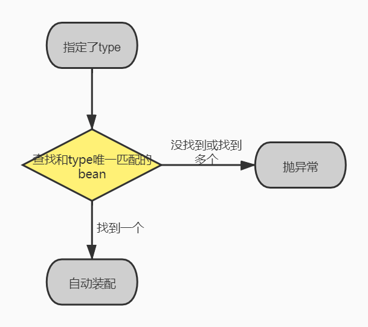

@Autowired和@Resouce的区别
@Autowired功能虽说非常强大，但是也有些不足之处。比如：比如它跟spring强耦合了，如果换成了JFinal等其他框架，功能就会失效。而@Resource是JSR-250提供的，它是Java标准，绝大部分框架都支持。
除此之外，有些场景使用@Autowired无法满足的要求，改成@Resource却能解决问题。接下来，我们重点看看@Autowired和@Resource的区别。
- @Autowired默认按byType自动装配，而@Resource默认byName自动装配。
- @Autowired只包含一个参数：required，表示是否开启自动准入，默认是true。而@Resource包含七个参数，其中最重要的两个参数是：name 和 type。
- @Autowired如果要使用byName，需要使用@Qualifier一起配合。而@Resource如果指定了name，则用byName自动装配，如果指定了type，则用byType自动装配。
- @Autowired能够用在：构造器、方法、参数、成员变量和注解上，而@Resource能用在：类、成员变量和方法上。
- @Autowired是spring定义的注解，而@Resource是JSR-250定义的注解。
此外，它们的装配顺序不同。
@Autowired的装配顺序如下：
@Resource的装配顺序如下：
如果同时指定了name和type：
2.如果指定了name：
3.如果指定了type

4.如果既没指定name也没指定type